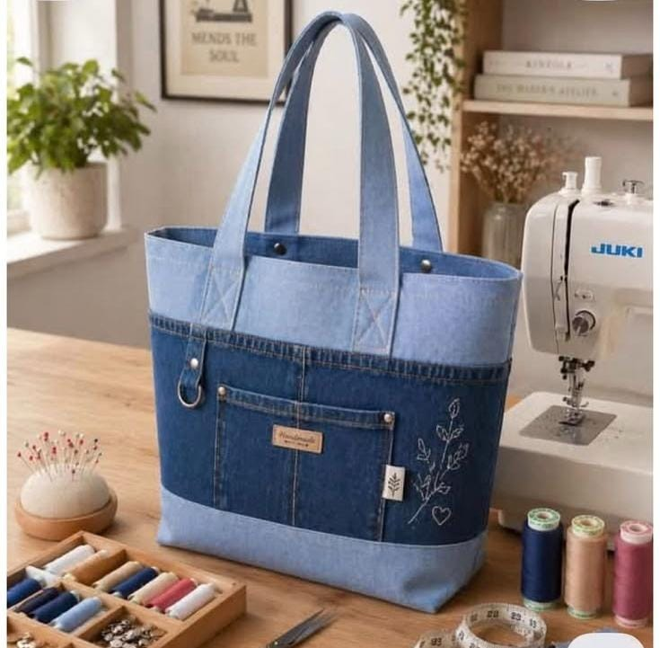

Tas Kain Denim

A.Alat dan Bhan
|
|
B.Langkah langkah
- Potong kain denim terang untuk bagian atas dan bagian alas bawah tas.
- Potong kain denim gelap untuk bagian tengah badan tas dan saku depan.
- Potong kain furing (lapisan dalam) dan kain interfacing (pelapis/busa angin) sesuai ukuran pola tas.
- Menyiapkan saku: Kelim bagian atas saku denim gelap, tambahkan label "Handmade", dan pasang ring D-ring di sisi samping saku.
- Jahit saku tersebut ke bagian depan panel tengah denim.
- Jahit sambungan panel atas (terang) ke panel tengah (gelap), lalu sambungkan panel tengah ke panel bawah (terang).
- Buat jahitan tindas ganda (double topstitch) pada setiap garis sambungan agar kuat dan tampak rapi seperti celana jeans.
- Lakukan langkah yang sama untuk sisi depan dan belakang tas, lalu setrika semua bagian hingga rata.
- Lipat strip kain denim terang untuk tali, setrika, lalu jahit di sepanjang tepi kiri dan kanannya agar kokoh.
- Pasang kedua tali ke panel luar tas dengan jahitan berbentuk kotak (X) dan perkuat bagian bawahnya menggunakan rivet logam.
- Satukan panel depan dan belakang tas (posisi kain luar saling berhadapan), lalu jahit sisi kiri, kanan, dan bawahnya.
- Jahit bagian sudut bawah tas (boxed corner) untuk membentuk alas/ruang tas agar bisa berdiri tegak.
- Jahit kain furing dengan cara yang sama, tetapi sisakan sedikit celah (lubang) di bagian bawahnya untuk membalik tas nanti.
- Masukkan badan luar tas ke dalam kantong furing (posisi kain luar saling berhadapan), lalu jahit keliling di bagian bibir atas tas.
- Tarik seluruh tas keluar melalui lubang sisa jahitan pada furing yang disisakan sebelumnya.
- Tutup lubang furing dengan jahitan tangan atau mesin, lalu masukkan furing ke dalam tas.
- Berikan satu kali jahitan tindas (topstitch) di sekeliling bibir atas tas agar bentuknya semakin rapi dan siap digunakan.
C.Modal dan Harga JualHarga jual di tentukan dengan ukuran tas,ruangan di dalamnya dan harga barang pada setiap toko |
|
👜Tas dari jeans bekas menggabungkan fungsi praktis, gaya kasual yang trendi, dan kepedulian terhadap lingkungan. Dengan memanfaatkan material denim yang kuat dan berkarakter, produk daur ulang ini menghasilkan desain yang modis, tahan lama, dan memiliki nilai jual yang tinggi.
Kembali ke beranda